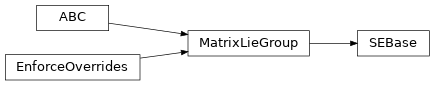

jaxlie._base¶
Module Contents¶
Classes¶
Interface definition for matrix Lie groups. |
|
Base class for special orthogonal groups. |
|
Base class for special Euclidean groups. |
-
jaxlie._base.GroupType¶
-
jaxlie._base.SEGroupType¶
-
class
jaxlie._base.MatrixLieGroup(parameters: jnp.ndarray)[source]¶ Bases:
abc.ABC,overrides.EnforceOverrides
Interface definition for matrix Lie groups.
-
matrix_dim:int¶ Dimension of square matrix output from
.as_matrix().
-
parameters_dim:int¶ Dimension of underlying parameters,
.parameters().
-
tangent_dim:int¶ Dimension of tangent space.
-
space_dim:int¶ Dimension of coordinates that can be transformed.
-
__matmul__(self: GroupType, other: GroupType) → GroupType[source]¶ -
__matmul__(self: GroupType, other: annotations.Vector) → annotations.Vector Overload for the
@operator.Switches between the group action (
.apply()) and multiplication (.multiply()) based on the type ofother.
-
abstract classmethod
identity(cls: Type[GroupType]) → GroupType[source]¶ Returns identity element.
- Returns
types.Matrix – Identity.
-
abstract classmethod
from_matrix(cls: Type[GroupType], matrix: annotations.Matrix) → GroupType[source]¶ Get group member from matrix representation.
- Parameters
matrix (jnp.ndarray) – types.Matrix representaiton.
- Returns
GroupType – Group member.
-
abstract
as_matrix(self) → annotations.Matrix[source]¶ Get transformation as a matrix. Homogeneous for SE groups.
-
abstract
apply(self: GroupType, target: annotations.Vector) → annotations.Vector[source]¶ Applies the group action.
- Parameters
target (types.Vector) – types.Vector to transform.
- Returns
types.Vector – Transformed vector.
-
abstract
multiply(self: GroupType, other: GroupType) → GroupType[source]¶ Left-multiplies this transformations with another.
- Parameters
other (GroupType) – other
- Returns
GroupType – self @ other
-
abstract classmethod
exp(cls: Type[GroupType], tangent: annotations.TangentVector) → GroupType[source]¶ Computes
expm(wedge(tangent)).- Parameters
tangent (types.TangentVector) – Input.
- Returns
MatrixLieGroup – Output.
-
abstract
log(self: GroupType) → annotations.TangentVector[source]¶ Computes
vee(logm(transformation matrix)).- Returns
types.TangentVector – Output. Shape should be
(tangent_dim,).
-
abstract
adjoint(self: GroupType) → annotations.Matrix[source]¶ Computes the adjoint, which transforms tangent vectors between tangent spaces.
More precisely, for a transform
GroupType:GroupType @ exp(omega) = exp(Adj_T @ omega) @ GroupType
In robotics, typically used for converting twists, wrenches, and Jacobians between our spatial and body representations.
- Returns
types.Matrix – Output. Shape should be
(tangent_dim, tangent_dim).
-
abstract
inverse(self: GroupType) → GroupType[source]¶ Computes the inverse of our transform.
- Returns
types.Matrix – Output.
-
-
class
jaxlie._base.SOBase(parameters: jnp.ndarray)[source]¶ Bases:
jaxlie.MatrixLieGroup
Base class for special orthogonal groups.
-
class
jaxlie._base.SEBase(parameters: jnp.ndarray)[source]¶ Bases:
jaxlie.MatrixLieGroupBase class for special Euclidean groups.
-
abstract static
from_rotation_and_translation(rotation: SOBase, translation: annotations.Vector) → SEGroupType[source]¶ Construct a rigid transform from a rotation and a translation.
-
apply(self, target: annotations.Vector) → annotations.Vector[source]¶ Applies the group action.
- Parameters
target (types.Vector) – types.Vector to transform.
- Returns
types.Vector – Transformed vector.
-
multiply(self: SEGroupType, other: SEGroupType) → SEGroupType[source]¶ Left-multiplies this transformations with another.
- Parameters
other (GroupType) – other
- Returns
GroupType – self @ other
-
inverse(self: SEGroupType) → SEGroupType[source]¶ Computes the inverse of our transform.
- Returns
types.Matrix – Output.
-
normalize(self: SEGroupType) → SEGroupType[source]¶ Normalize/projects values and returns.
- Returns
GroupType – Normalized group member.
-
abstract static